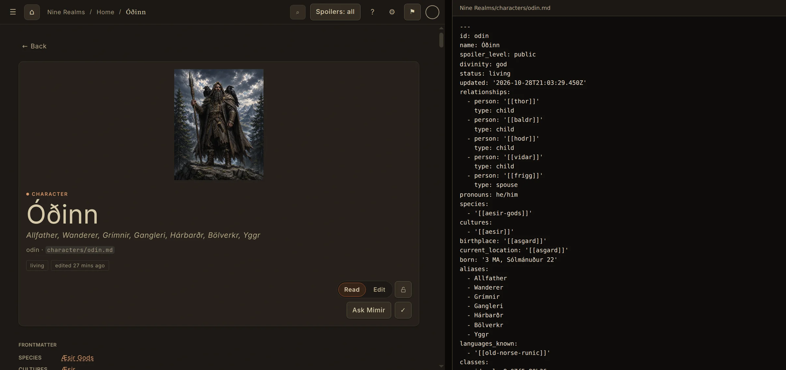
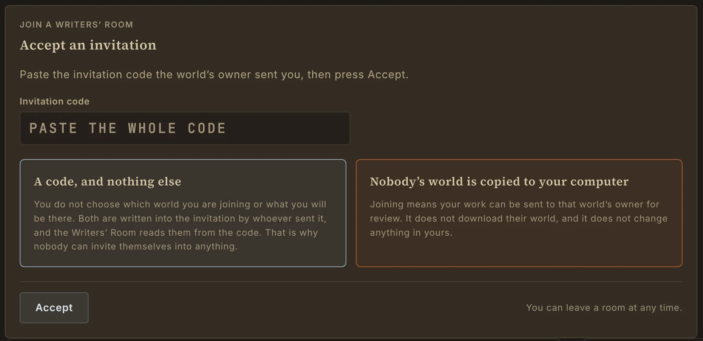
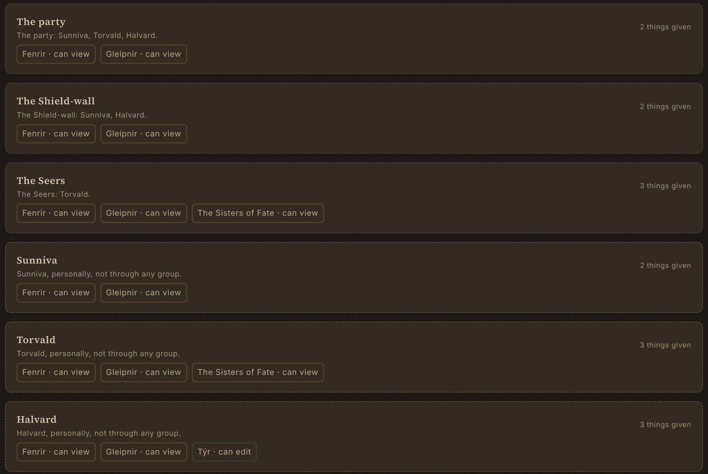

Full authority over the world. Publishes the canonical baseline, accepts or rejects contributor changes, manages roles and controls what becomes canon.
The owner's word is canon.
The owner's local world copy is the authoritative version. Hosted changes and contributor edits do not silently overwrite it. Publishing a canonical baseline and accepting changes into local canon are deliberate owner actions.
The creator decides what becomes part of the world. A contributor can propose an idea, draft an entry or refine a description, but that work does not alter the owner's local files until the owner explicitly accepts it.
- Local copy remains canonical
- Hosted changes require explicit acceptance
- Contributors propose. The owner decides.
- Publishing and reconciliation are owner actions

Five roles. Clear boundaries.
Every collaborator gets one of five roles. Each role has specific capabilities, and an Admin can manage substantial hosted work but does not automatically gain permission to write the owner's local files.
Manages hosted content and collaborators for the owner, and can review changes in the hosted world. An Admin can never write to the owner's local files or accept changes into canon.
Creates and edits entries on the hosted copy. An Admin or the owner can review those changes in the hosted world, but only the owner can accept them into the local canon.
Can read the hosted world and suggest changes without editing it directly.
Read-only access to the hosted world. Can browse entries and follow the world's structure without modifying anything.
Propose, review, accept.
Contributors work on the hosted version. Their changes are proposals until the owner accepts them. The separation between hosted work and the owner's local canon means nobody can accidentally overwrite years of worldbuilding.
- 01 Publish a canonical baseline The owner shares a snapshot of the world for collaborators to work from.
- 02 Contributors work on the hosted copy Editors draft entries, refine descriptions and build on the shared material.
- 03 Changes are proposed for review Contributor work stays visible as proposals, not silent overwrites.
- 04 Owner accepts, revises or rejects The owner reconciles contributor work into their local canon on their own terms.
The owner sees every proposed change in one place and can accept everything that is safe in one go.
From a writing partner to a full creative team.
The Writers' Room starts at Worldsmith, and every collaborator needs their own Worldsmith plan. No separate collaboration product or add-on is required.
Upgrade to Worldsmith to create or join a Writers' Room. Campaigns are separate: players join those free.
5 guest collaborators per world, each with their own Worldsmith plan.
20 guest collaborators per world, each with Worldsmith or above.
Guest collaborator count includes outstanding invitations. If a host's plan drops below Worldsmith, the whole room becomes read-only for everyone until it is Worldsmith again. A collaborator below Worldsmith becomes read-only in every room and keeps their place. Nothing is deleted, everyone can still open, read and export, and local files stay fully editable. Allowances are planning values and may change before paid checkout opens.
Collaboration is creation. Campaign is presentation.
Writers' Room is where creators build together. Campaign is where the GM presents a controlled experience to players, audiences or participants. They share platform services (hosting, permissions and the same underlying world), but they serve different workflows with different permission models.
- Creators collaborate on the world itself
- Editors propose changes to entries and lore
- The owner decides what becomes canon
- The goal is a better, more complete world
- The GM presents the world to players
- Participants experience a controlled view
- Spoiler control and selective visibility
- The goal is a guided narrative experience


Writers' Room and Campaign are planned for public beta. These captures are from a development build.
Frequently asked questions
- Everyone in a Writers' Room needs Worldsmith or above, to create a room or to join one. This is different from a Campaign, where players and Co-GMs join free. Your local copy of the world always stays yours.
- No. The owner's local copy is the canonical version. Contributors work on the hosted copy and their changes remain proposals until the owner explicitly accepts them. Publishing and reconciliation are deliberate owner actions.
- Writers' Room is where creators build together. Campaign is where the GM presents a controlled experience to players, audiences or participants. They share platform services but serve different workflows with different permission models.
Build together
Create together. Keep control.
Explore how Mimir brings creators together without sacrificing the owner's authority over their world.